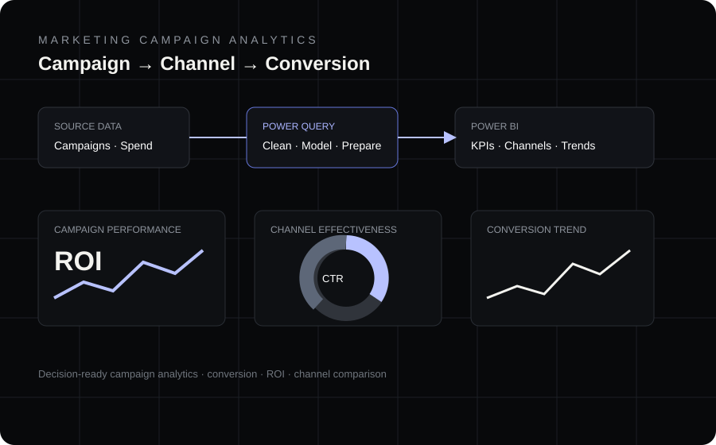

02 / MARKETING
Marketing Campaign
Analytics.
Campaign performance, conversion and ROI intelligence presented as a decision-ready Power BI experience.

The story
See which channels actually perform.
The dashboard brings campaign activity, conversion and financial performance into one view so campaign results can be compared and acted on.
ROIReturn on campaign spend
CTREngagement signal
ConversionOutcome tracking
Tools
Power BIInteractive dashboard
DAXKPI calculations
Power QueryData preparation
AnalyticsCampaign comparison
ROIFinancial effectiveness
KPIsDecision metrics